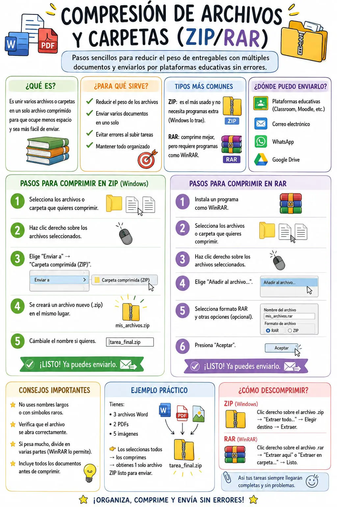

Compresión de archivos y carpetas (ZIP/RAR)
La compresión de archivos y carpetas es un proceso que permite reducir el tamaño de uno o varios documentos para que ocupen menos espacio de almacenamiento y puedan compartirse con mayor facilidad. Este procedimiento es muy utilizado tanto en el ámbito académico como en el laboral, ya que facilita el envío de información por correo electrónico, plataformas educativas o servicios de almacenamiento en la nube.
Los formatos de compresión más conocidos son ZIP y RAR. Ambos cumplen la misma función de disminuir el tamaño de los archivos, aunque presentan algunas diferencias. El formato ZIP es compatible con la mayoría de los sistemas operativos y puede abrirse sin necesidad de instalar programas adicionales. Por otro lado, el formato RAR suele ofrecer una mejor tasa de compresión, pero generalmente requiere aplicaciones específicas como WinRAR para crear o extraer los archivos.
El funcionamiento de la compresión consiste en reorganizar la información contenida en los archivos para eliminar datos repetitivos y aprovechar mejor el espacio disponible. Es importante aclarar que este proceso no modifica el contenido del documento ni afecta su calidad. Cuando el archivo se descomprime, recupera exactamente la misma información que tenía antes de ser comprimido.
Una de las principales ventajas de comprimir archivos es la facilidad para compartir varios documentos al mismo tiempo. En lugar de enviar cada archivo por separado, es posible agruparlos en una sola carpeta comprimida, lo que hace más rápida la carga y la descarga de la información. Esta característica resulta especialmente útil para estudiantes que deben entregar trabajos con documentos, imágenes, presentaciones o videos.
La compresión también contribuye al ahorro de espacio en discos duros, memorias USB y servicios de almacenamiento en la nube. Aunque actualmente existen dispositivos con gran capacidad, reducir el tamaño de los archivos permite aprovechar mejor los recursos disponibles y mantener una organización más eficiente de la información.
Además de disminuir el tamaño de los archivos, algunos programas de compresión ofrecen funciones adicionales, como proteger los documentos mediante una contraseña o dividir un archivo muy grande en varias partes. Estas opciones son útiles cuando se desea mantener la privacidad de la información o enviar archivos que superan el límite de tamaño permitido por algunas plataformas.
Entre los programas más utilizados para comprimir y descomprimir archivos se encuentran WinRAR, 7-Zip y WinZip. Estas herramientas cuentan con interfaces sencillas que permiten seleccionar los documentos, elegir el formato de compresión y generar el archivo comprimido en pocos pasos. Muchas de ellas también permiten extraer archivos de diferentes formatos de manera rápida y segura.
En conclusión, la compresión de archivos y carpetas es una herramienta muy importante para el manejo de la información digital. Su uso facilita el almacenamiento, el envío y la organización de documentos, optimizando el espacio disponible y mejorando la eficiencia en el intercambio de archivos. Conocer el funcionamiento de los formatos ZIP y RAR permite a los usuarios gestionar sus documentos de manera más práctica y segura, especialmente en entornos educativos y profesionales.
